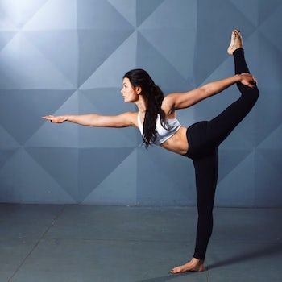
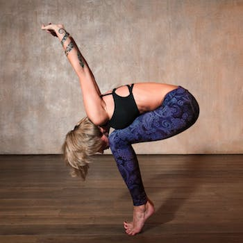
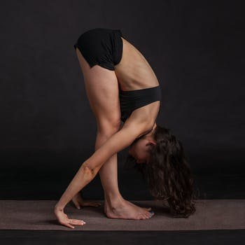

grow
empower
awaken
About our yoga practice
our center
Jivamukti Yoga teacher training is the most complete and rigorous training program in Yoga. As pioneers of modern yoga, thousands have become certified in the Jivamukti method, by participating in the month long program which incorporates an in-depth study of classical Yoga postures (asanas), the chanting and study of ancient texts, music and inspiring activism principles.
classes
wrapper header for section
sustainability
reduced fivefold. Other benefits include the ability to monitor the operations progress in real time, data verification, reduced risk of fraud, and a shorter cash cycle. The platform’s
credibility
reduced fivefold. Other benefits include the ability to monitor the operations progress in real time, data verification, reduced risk of fraud, and a shorter cash cycle. The platform’s
Meditation
The principles of Jivamukti Yoga empower individuals of any background, culture, language, age-group or profession to fully awaken and develop compassion towards all living beings and exist in harmony with all life while respecting the precious resources on earth.
Our Instructors
Jivamukti Yoga teacher training is the most complete and rigorous training program in Yoga. The Jivamukti training will provide you with a blueprint for incorporating the physical, psychological, spiritual and mystical aspects of yoga into modern life, without losing sight of the ultimate goal of the practice: liberation.